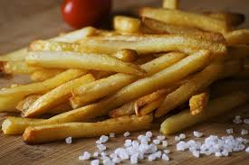

Hold Click on This Image to Enlarge
Description
A crunchy delight that you'll enjoy alot
Ingredients
- 2 cups warm water
- ⅓ cup white sugar
- 2 large russet potatoes - peeled, and sliced into 1/4 inch strips
- 6 cups vegetable oil for frying
- salt to taste
Steps
- Gather all ingredients.
- Stir together warm water and sugar in a medium bowl. Soak potatoes in water mixture for 15 minutes.
- Remove potatoes from water and dry thoroughly on paper towels. Heat oil in a deep-fryer to 375 degrees F (190 degrees C).
- Cook potatoes in hot oil until golden, 5 to 6 minutes. Drain on paper towels and season with salt.